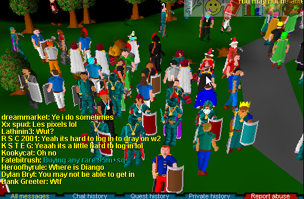
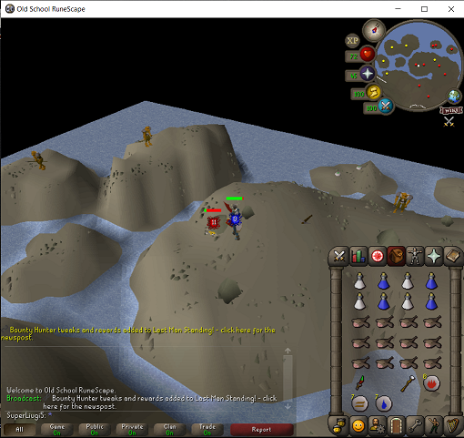

Runescape History 101
Runescape Classic
Runecape was developed and published by Jagex in January 2001.The first version of Runescape became known as Runescape Classic.
Runecape was developed and published by Jagex in January 2001.The first version of Runescape became known as Runescape Classic.
When Runescape had a major update in 2006, it came to be known as Runescape 2. Runescape 2 had many updates until December 2012
